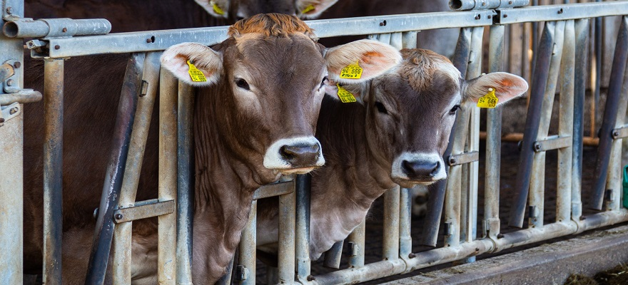

Cattle Management, Handling, Facilities Design, and Transportation in Beef Cattle
Since time immemorial, animals have been an integral part of our food. They have been used to obtain food like milk, eggs, meat, etc. Other than the food, we use them even for some basic requirements like wool, silk, labour, etc. The population has reached its peak, especially in a country like India. The population explosion has led to greater demand for basic requirements such as food, shelter, clothing, etc. To meet the increasing requirements and demands we need to apply a greater effort. One such effort to meet the food demand is animal husbandry. Animal husbandry includes cattle farming, poultry farming, fisheries, apiculture, etc. Here we will learn about cattle farming.
Animal husbandry is the science of farming animal livestock. It includes caring for, breeding and management of livestock. Animal husbandry is a large-scale business where animals that provide us food are reared, bred, sheltered and cared for in a farm or in regions which are specially built for them. Animal husbandry was initiated with cattle farming. Under cattle farming, livestock such as cows, goats, buffalo, sheep, etc. is reared. Later, animal husbandry was even extended to poultry farming, fisheries, apiculture, etc. And this extends a helping hand to the increasing needs of the generations.
Cattle farming involves the rearing and management of two types of animals- one group for food requirements like milk and another for labour purposes like ploughing, irrigation, etc. Animals which provide milk are called milch/dairy animals. For example, goats, buffalo, cows, etc. Animals which are used for labour are called draught animals.
Cattle Farming
Since dairy animals are cared for and bred for milk, we need to improve milk production to meet the requirements. The period after the birth of a calf, when a cow starts to produce milk, is called the lactation period. We can enhance milk production by increasing this lactation period. But along with milk production, quality must also meet. Dairy farm management is the management of the milch animals with the goal of enhancing the quantity and quality of the milk produced. For this reason, high-yielding and disease-resistant breeds are developed.
Farm Management and Food
Cattle farming is not all about milk or meat production. It also comes with some responsibilities. To meet human requirements, we need to take good care and need proper management of livestock.Food requirements of animals are also a part of cattle farming. To maintain high-yielding and disease-resistant breeds, they must be provided with an adequate water supply and nutrient-rich fodder regularly according to their needs. In cattle farming, two factors are considered regarding the food of cattle. The food that is provided must keep the animals healthy as well as should meet the farming requirement. Hence, animal feed includes roughage (high fibre content) and concentrates (high proteins and nutrient content). In addition to this, supplements containing micronutrients are also provided to animals. An adequate proportion of these rations promote healthy and high-output animals.
The third responsibility of cattle farming management is to maintain disease-free breeds. Animals are not an exception to disease. They also suffer from numerous diseases. This may affect the health as well as productivity of animals; even cause their death. Parasites, bacteria, and viruses are the major villains here. These microbes infect the cattle externally as well as internally. Vaccination is the one solution for the protection against bacterial and viral infections.